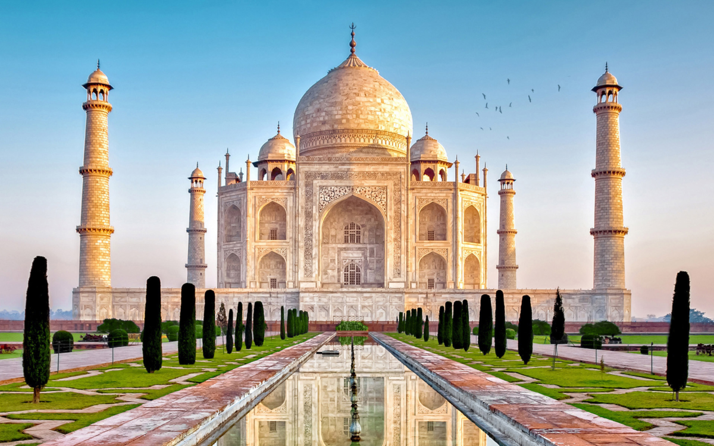

DREAM CITIES
Accueil
Acceuil
Bolivie
Bora-Bora
Chilie
Dubai
vietnam
Taj Mahal
Saint-Louis
Taj Mahal
Présentation de Taj Mahal
.. En visite en Inde ? C'est tout naturellement que nous irons visiter ce monument,
ne pas le faire, c'est un peu comme ne pas aller voir la tour Eiffel quand vous êtes ,
à Paris. En pourtant, ce n'est quand même pas aussi facile, car le Taj Mahal n'est pas,
dans la capitale. Heureusement, il n'est pas à l'autre bout de ce grand pays, non plus.,
Le Taj Mahal est situé à Agra, au bord de la rivière Yamuna, dans l'État de l'Uttar,
Pradesh , en Inde . C'est un mausolée de marbre blanc construit par l'empereur moghol ,
musulman Shâh Jahân en mémoire de son épouse Arjumand Bânu Begam, aussi connue sous le,
nom de Mumtaz Mahal, qui signifie en persan « la lumière du palais ». Elle meurt le 17 ,
juin 1631 en donnant naissance à leur quatorzième enfant alors qu'elle accompagnait son,
mari pendant une campagne militaire. Elle trouve une première sépulture sur place dans ,
le jardin Zainabad à Burhanpur. La construction du mausolée commence en 1631 et est achevée ,
dans sa plus grande partie en 1648
